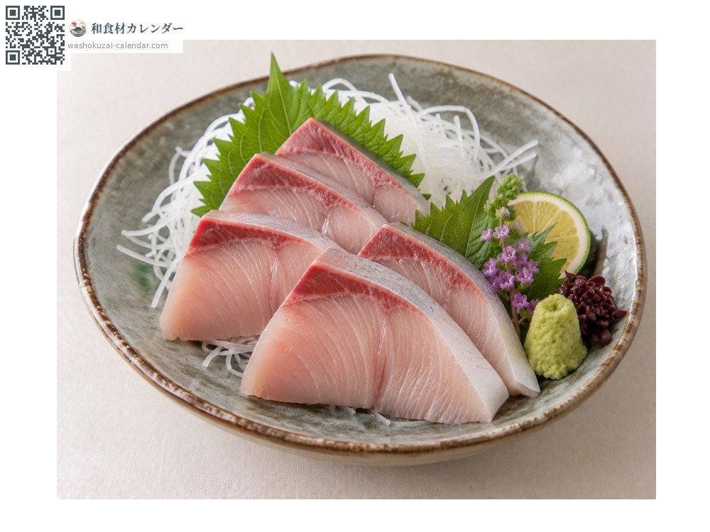
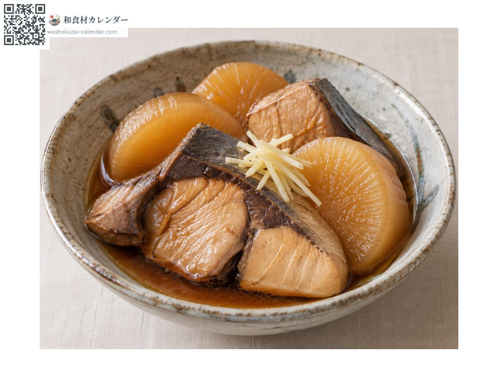
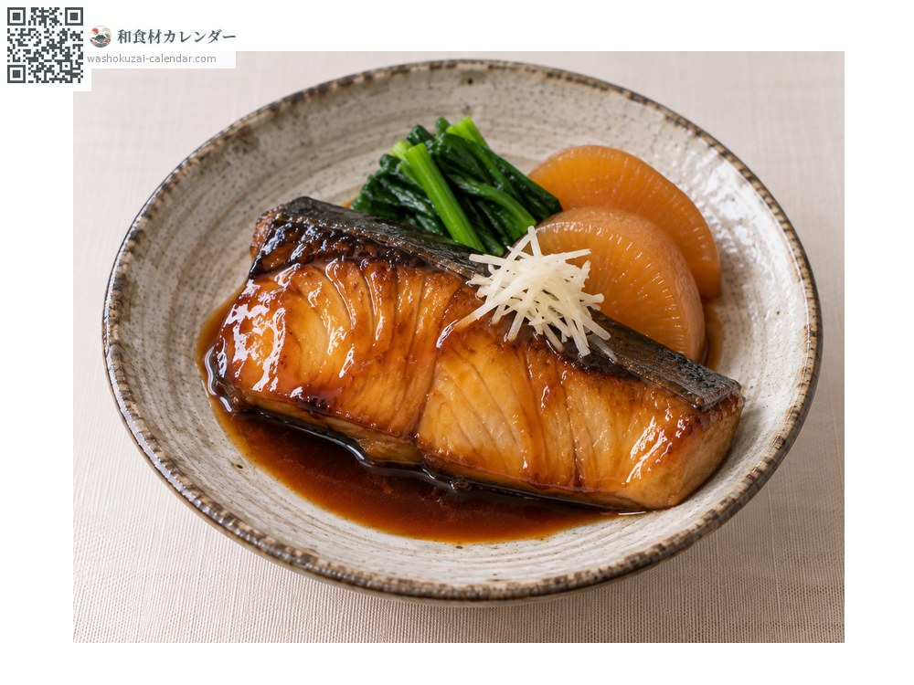
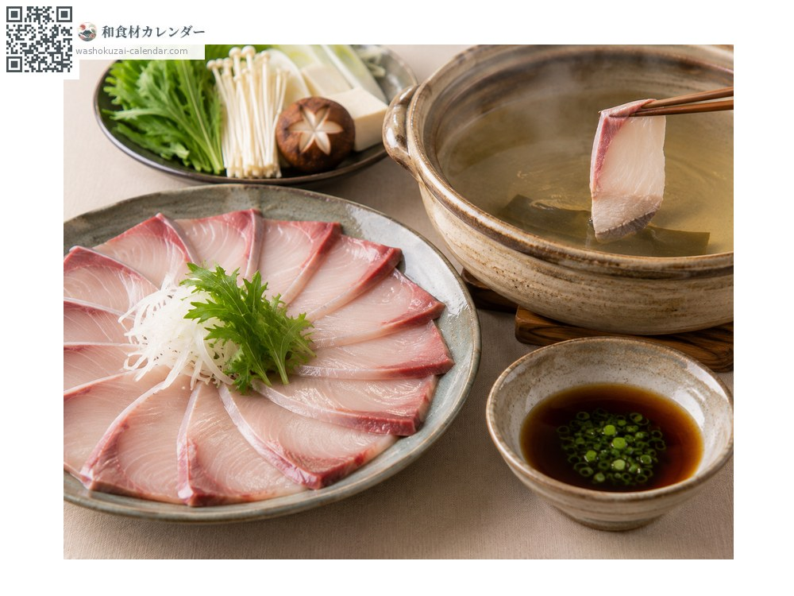

海鮮
鰤魚（青甘）
ブリ ぶり buri
別名buri、hamachi
當令時期為1月、2月、12月

當令時期
1月
2月
3月
4月
5月
6月
7月
8月
9月
10月
11月
12月
當令有供應
料理方式

生魚片
寒鰤油脂豐厚，風味濃郁。

鰤魚燉白蘿蔔
用魚頭魚骨能熬出好湯頭。

照燒
裹上甜鹹醬汁燒至發亮。

鰤魚涮涮鍋
薄切快速涮過，油脂減少更好入口。
挑選方式
血合部位顏色鮮紅、魚肉緊實。切片要挑白色油花分布均勻的。
保存方式
切片擦乾水分後包保鮮膜冷藏。生食用當天食用。
主要產地
小知識
隨成長改名的出世魚。關西稱ツバス→ハマチ→メジロ→ブリ，關東稱ワカシ→イナダ→ワラサ→ブリ。